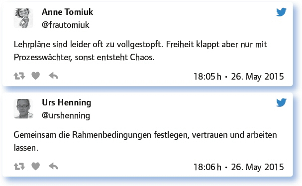
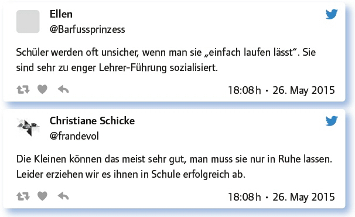
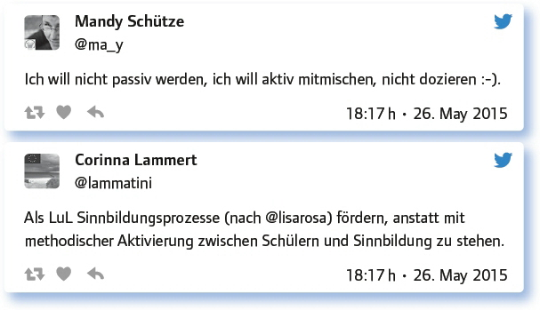
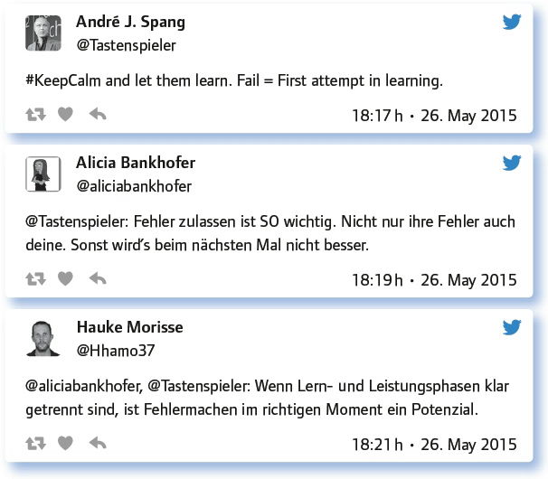
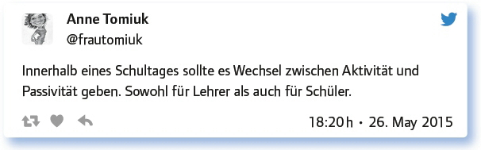

von Elke Höfler
Wie sehr das Thema Schüleraktivierende Methoden im Unterricht interessiert, zeigt die Tatsache, dass es sowohl 2014 (Ausgabe 33) als auch 2015 (Ausgabe 80) zum Wochenthema gewählt wurde. Um eine Wiederholung der Diskussionen zu vermeiden, wurde von den Moderatoren André J. Spang (@tastenspieler) und Torsten Larbig (@herrlarbig) eine Erweiterung des Themenfeldes angestrebt, wodurch nicht nur die psychische, sondern auch die physische Aktivierung zur Diskussion gestellt wurde.
„Wenn man uns lässt, machen wir gute Sachen.“– Stimmt das und wie koordiniert man das?
Als Einstieg wurde eine offene Frage gestellt, die eine Beantwortung auf unterschiedlichen Ebenen erlaubt. Die Teilgeber überlegten, welche Rahmenbedingungen und Voraussetzungen für schüleraktivierenden Unterricht gegeben sein bzw. berücksichtigt werden müssen. Dabei spielen der Freiheitsgedanke und sein Ausmaß eine zentrale Rolle:

Der Umgang mit Freiheit beim Lernen ist dabei eine Frage der Sozialisierung:

Für Lehrende bedarf dieser Schritt in die Freiheit auch ein Umdenken:
Bewegung wirkt aktivierend, das sagt uns jeder Fitnesstracker: Aber wie schaffe ich das in kurzer Zeit im engen Klassenraum?
Aktivierung meint auch physisches Bewegen mittels Methoden wie Partnermemory, Laufdiktat, Jahrmarkt oder einfachen Bewegungsspielen. Einige Impulse zur Integration von Bewegung in den Unterricht sollen hier genannt werden, weitere sind im vollständigen Protokoll nachzulesen:
Kreidestaffel geht immer: Ergebnisse von vielen Schülern an die Tafel bringen lassen. Braucht kaum Anleitung.
Zitate an den Wänden, Gesprächsgruppen dazu (Agora!), Gallery Walk mit Karikaturen, draußen unterrichten.
Analoge Vernetzung im Klassenraum: SuS stellen Produkte (z. B. Texte) aus, gehen umher und kommentieren die Produkte.
Vor allem die Öffnung des Lernraumes erscheint in Hinblick auf Bewegung als Aktivierung zentral. Wobei die Bewegung durch digitale Medien nicht verhindert wird.
Man beschränke den Unterricht nicht auf den Klassenraum! Da gibt es noch Treppen Aulen, Flure, Höfe und viel Umgebung.
Einfach aufstehen hilft schon mal viel. In Tabletklassen (Reizwort) gehen alle sowieso immer durchs Haus.
In der Sekundarstufe II habe ich auf geistige Aktivität geachtet. Heute Vision: mit kleinen Tablets Unterricht im Freien.
Wenn Schüler Smartphones zusammen nutzen, weil teilweise keins da oder (häufiger) Monatsbudget schon leer ist, kommt Bewegung in den Raum.
Montessori: „Lehrer muss passiv werden, damit Schüler aktiv werden kann.“ – Leicht gesagt – wie schaffe ich das?
Neben methodischen Ansätzen, wie die Integration des Flipped Classrooms, wurden hier Wege der Passivität ebenso diskutiert, wie die Frage, ob man als Lehrperson überhaupt eine passive Rolle einnehmen solle, um Schüler zu aktivieren:

Digitale Medien scheinen hierbei einen Weg vorzugeben:
Wie in vielen Ausgaben des #EDchatDE kam das Gespräch dabei auch wieder auf den Umgang mit Fehlern in der heutigen Lehr- und Lernkultur.

Wie so oft im Leben spielt auch in Hinblick auf die Aktivierung die Mischung und Abwechslung eine zentrale Rolle. Sowohl Lehrende als auch Lernende brauchen sowohl Aktivierung als auch passive Momente:

Aktivieren ist gut, dranbleiben ist besser: Wie schaffe ich Abwechslung und langfristige Motivation im Unterricht und darüber hinaus?
Den nachhaltigen Lernprozess im Auge sollen Mittel und Wege gefunden werden, Abwechslung und Motivation im Unterricht zu garantieren. Hierfür wurden unterschiedliche Tipps gegeben, die vom „Fragen zulassen“ bis zu konkreten Methoden reichen:
Ein Feuerwerk ist gleich verpufft – das stimmt. Relevante Lernszenerien und Lebensweltbezug können helfen.
T. Maier sagt, wir müssen Emotionen auslösen, die unter die Haut gehen. Dann gehe die Dopamin-Dusche an: http://t.co/XI2vYktdi4
Unterrichtsprozesse gemeinsam planen, regelmäßige Evaluation des Unterrichts durch SuS, Zielvereinbarungen.
Dabei spielt vor allem der Methoden- und Medienwechsel eine zentrale Rolle, der weder zu einer Unter- noch zu einer Überforderung führen, sondern Abwechslung bringen soll:
Methodenwechsel! Auch bei selbstbestimmtem Lernen kann man Rückmelde-, Kommunikations- und Zwischenpräsentationsphasen einbauen.
Konzentrationsspanne der Schüler bzw. Lerngruppe berücksichtigen. Wechsel zwischen Phasen der Entspannung und Anspannung.
Auf den Schüler passende Arbeitsszenarien achten. Also nicht Tablet um jeden Preis und nicht Stift und Papier um jeden Preis.
Antworte auf 3 Tweets unterschiedlicher Teilgeberinnen a), zustimmend, b) kritisch c) provozierend!
Ausgelöst durch folgenden Transparenz-Tweet entwickelte sich eine spannende Diskussion in Hinblick auf die Notengebung:
Wenn von digitalen Medien gesprochen wird, wird oft auch von einem didaktischen Mehrwert gesprochen, den diese Medien bringen (sollen). Oft wird ihnen dieser Mehrwert gerade aber auch abgesprochen, wie die folgenden Diskussionsbeiträge zeigen:
Medien(-Einsatz) wirkt generell aktivierend und motivierend – daraus kann man etwas machen.
Je verbotener, um so aktivierender sind digitale Medien für Schüler im Unterricht #so- willesmanchmalscheinen.
Device use as part of lessons designed for creative learning is great. Giving a child a tablet is not enough #createvsconsume.
Digitale Medien sind KEINE eierlegende Wollmilchsau und Rettung für „guten“ Unterricht.
Wie immer: Digitale Medien sind Mittel zum Zweck. Zur Partizipation als auch (falsch verstanden) zum passiven Konsum.
Zweckmäßig und zielführend eingesetzt, ermöglichen sie eine höhere Methodenvielfalt und mehr Schülermotivation.
Tipps und Tricks: Wie gelingt dir Schüleraktiverung im Unterricht (und darüber hinaus)? Gerne mit Links!
In dieser Sammelfrage wurden zahlreiche Beispiele aus der Praxis geliefert, die im Gesamtprotokoll nachgelesen werden können. Hier sollen nur einige eher abstrakte Beispiele exemplarisch genannt werden:
Schüler arbeiten und denken lassen durch aktive und passive Phasen (gute Mischung).
Und jetzt mal ne Runde kleiner: Hier ist das Ziel, hier sind Wege zum Ziel im Angebot, sucht euch euren aus!
Aktivierung beginnt für mich mit Ermutigung: Schüler die Erfahrung machen lassen, dass es einen Unterschied macht, ob sie da sind.
Welche Anregungen, Fragen hast du sonst noch zum Thema?
Neben zahlreichen Methodensammlungen wurden hier abschließend auch allgemeine Gedanken geäußert, die unkommentiert zitiert werden sollen, um zu zeigen, wie heterogen die geäußerten Gedanken der Teilgeber sind:
Immer wieder erstaunlich: Auch eine längere, ruhige Einzelarbeit ist differenziert und aktivierend.
Auch ein gut gemachter Lehrervortrag kann motivierend und aktivierend wirken.
Letztlich ist nicht die Art der Methode sondern die Qualität der Methode entscheidend.
Fazit:
Hier lässt sich festhalten, dass Methoden, die Lerner/innen aktivieren, nicht zwangsläufig die Lehrperson passivieren. Vielmehr geht es für die Lehrperson darum, einen Rollenwechsel vorzunehmen, die Rahmenbedingungen für sich selbst und die Lernenden abzustecken und zu kommunizieren. Um ein Gelingen aktivierender Maßnahmen sicherzustellen, müssen Werte wie Wertschätzung und Transparenz gelebt und die Angst vor Kontrollverlust oder Fehlern, abgelegt werden. Erwartungen und Anforderungen müssen adaptiert und die Lernziele um soziale, personale und Methodenkompetenzen – sowohl auf Lernenden- als auch Lehrendenseite – erweitert werden.
Die Lerner/innen sollen zu einer aktiven Lernhaltung angeregt werden, wobei Aktivierung sowohl auf psychischer als auch physischer Ebene zu verstehen ist. Und auch hier gilt der Ruf nach Methodenvielfalt: Auf aktivierende Methoden sollten eher passiv-konsumierende Phasen folgen.
Weiterführende Materialien:
Eintrag im Blog zu #EDchatDE no. 80: https://edchatde.wordpress.com/2015/05/25/zur-vorbereitung-des-80-edchatde-schuleraktivierende-methoden-im-unterricht/
#EDchatDE no. 33 (vom 27. Mai 2014): Schüleraktivierung im Unterricht: https://edchatde.wordpress.com/2014/05/26/zur-vorbereitung-des-33-edchatde-schuleraktivierung-im-unterricht/
Protokoll zu #EDchatDE no. 33: Schüleraktivierung im Unterricht: https://docs.google.com/spreadsheets/d/1zdIQd45TDQPWlriZCdXtRQxUyjcxZnYSD5fLTWH4iug/pubhtml
Überblick zu schüleraktivierenden Lehr- und Lernformen nach D. Homberger: http://t.co/33fRijo5ch
Link zum vollständigen Protokoll: